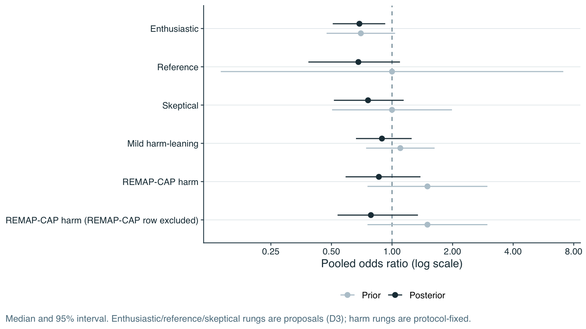
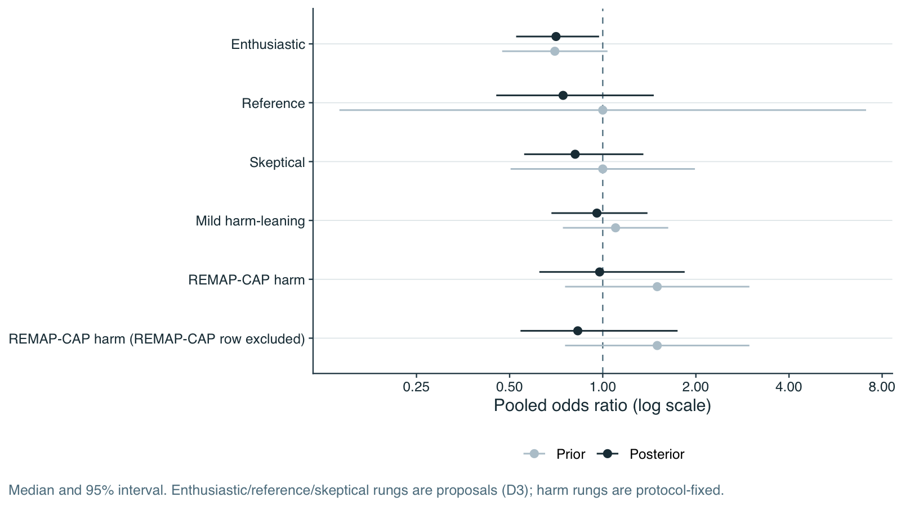
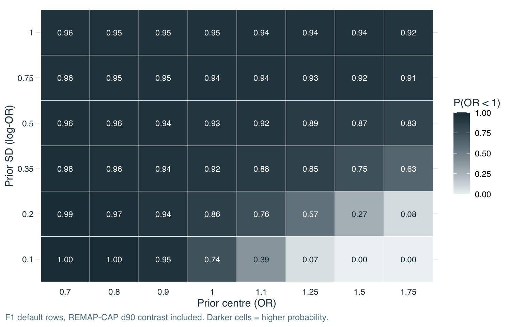
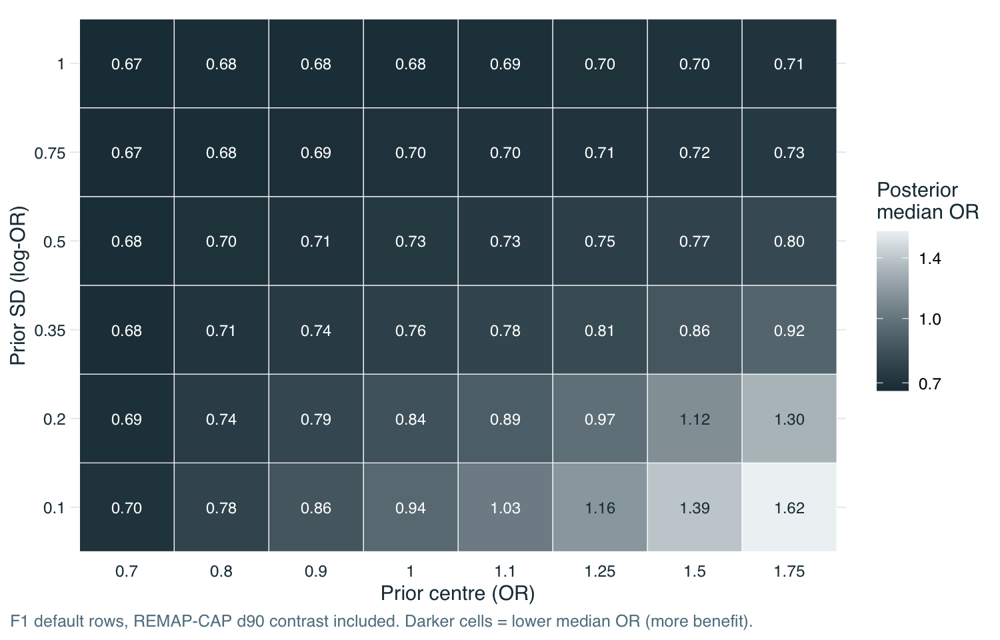

Code
library(targets)
library(dplyr)
library(knitr)The ladder places a sequence of priors on the pooled log-OR. The mild-harm and REMAP-CAP-harm rungs are fixed by the protocol; the other three are proposals awaiting confirmation. The REMAP-CAP-harm rung is also run without the REMAP-CAP contrast in the likelihood, because that trial is otherwise counted twice (once in the prior, once in the data).
s |> filter(group == "ladder", set == "F1", !drop_remap) |>
transmute(Rung = rung_label[rung], `Prior on log-OR` = prior_text(mu_mean, mu_sd),
`Prior 95% interval for OR` = sprintf("%.2f to %.2f", exp(mu_mean - 1.96 * mu_sd), exp(mu_mean + 1.96 * mu_sd)),
Status = ifelse(rung %in% c("mild_harm", "remap_harm"), "Protocol-fixed", "Proposal")) |>
kable()| Rung | Prior on log-OR | Prior 95% interval for OR | Status |
|---|---|---|---|
| Enthusiastic | Normal(log 0.70, 0.20) | 0.47 to 1.04 | Proposal |
| Reference (weakly informative) | Normal(0, 1.00) | 0.14 to 7.10 | Proposal |
| Skeptical | Normal(0, 0.35) | 0.50 to 1.99 | Proposal |
| Mild harm-leaning | Normal(log 1.10, 0.20) | 0.74 to 1.63 | Protocol-fixed |
| REMAP-CAP harm | Normal(log 1.50, 0.35) | 0.76 to 2.98 | Protocol-fixed |
| Prior | Prior on log-OR | OR (95% CrI) | P(OR<1) | P(OR<0.9) | P(OR<0.833) | P(OR>1.1) | tau median | Predictive OR, new trial (95% interval) |
|---|---|---|---|---|---|---|---|---|
| Enthusiastic | Normal(log 0.70, 0.20) | 0.69 (0.51–0.93) | 0.99 | 0.96 | 0.90 | 0.00 | 0.44 | 0.70 (0.23–2.17) |
| Reference (weakly informative) | Normal(0, 1.00) | 0.68 (0.38–1.10) | 0.95 | 0.89 | 0.82 | 0.02 | 0.47 | 0.68 (0.18–2.28) |
| Skeptical | Normal(0, 0.35) | 0.76 (0.51–1.14) | 0.92 | 0.81 | 0.68 | 0.04 | 0.45 | 0.75 (0.24–2.48) |
| Mild harm-leaning | Normal(log 1.10, 0.20) | 0.89 (0.66–1.25) | 0.76 | 0.52 | 0.34 | 0.11 | 0.47 | 0.87 (0.29–3.30) |
| REMAP-CAP harm | Normal(log 1.50, 0.35) | 0.86 (0.59–1.38) | 0.75 | 0.59 | 0.44 | 0.14 | 0.47 | 0.84 (0.26–3.21) |
| REMAP-CAP harm (REMAP-CAP row excluded) | Normal(log 1.50, 0.35) | 0.79 (0.54–1.35) | 0.84 | 0.72 | 0.61 | 0.10 | 0.42 | 0.77 (0.27–2.98) |

Moving from the reference prior to the skeptical prior raises the posterior median OR from 0.68 to 0.76 and lowers P(OR<1) from 0.95 to 0.92. The harm-leaning priors have a larger effect: the posterior median is 0.89 under the mild-harm prior and 0.86 under the REMAP-CAP-harm prior, with P(OR<1) of 0.76 and 0.75. Removing the REMAP-CAP row under the REMAP-CAP-harm prior, which avoids counting that trial twice, gives 0.79 and 0.84. The posterior median stays below 1 under every prior in the F1 ladder (largest: 0.89), but with the harm-leaning priors the credible interval is wide and the probability of benefit falls to about three in four.
| Prior | Prior on log-OR | OR (95% CrI) | P(OR<1) | P(OR<0.9) | P(OR<0.833) | P(OR>1.1) | tau median | Predictive OR, new trial (95% interval) |
|---|---|---|---|---|---|---|---|---|
| Enthusiastic | Normal(log 0.70, 0.20) | 0.71 (0.52–0.97) | 0.98 | 0.94 | 0.86 | 0.01 | 0.30 | 0.70 (0.27–1.82) |
| Reference (weakly informative) | Normal(0, 1.00) | 0.74 (0.45–1.46) | 0.85 | 0.76 | 0.67 | 0.10 | 0.36 | 0.73 (0.25–2.55) |
| Skeptical | Normal(0, 0.35) | 0.81 (0.56–1.35) | 0.80 | 0.67 | 0.54 | 0.12 | 0.37 | 0.79 (0.30–2.53) |
| Mild harm-leaning | Normal(log 1.10, 0.20) | 0.96 (0.68–1.40) | 0.60 | 0.37 | 0.22 | 0.23 | 0.43 | 0.93 (0.34–3.17) |
| REMAP-CAP harm | Normal(log 1.50, 0.35) | 0.98 (0.62–1.84) | 0.54 | 0.38 | 0.27 | 0.34 | 0.45 | 0.93 (0.33–3.90) |
| REMAP-CAP harm (REMAP-CAP row excluded) | Normal(log 1.50, 0.35) | 0.83 (0.54–1.75) | 0.70 | 0.60 | 0.50 | 0.21 | 0.35 | 0.79 (0.34–3.80) |
| Prior | Prior on log-OR | OR (95% CrI) | P(OR<1) | P(OR<0.9) | P(OR<0.833) | P(OR>1.1) | tau median | Predictive OR, new trial (95% interval) |
|---|---|---|---|---|---|---|---|---|
| Enthusiastic | Normal(log 0.70, 0.20) | 0.72 (0.55–0.92) | 1.00 | 0.97 | 0.88 | 0.00 | 0.34 | 0.73 (0.29–1.71) |
| Reference (weakly informative) | Normal(0, 1.00) | 0.74 (0.49–1.05) | 0.96 | 0.88 | 0.77 | 0.02 | 0.35 | 0.75 (0.28–1.92) |
| Skeptical | Normal(0, 0.35) | 0.78 (0.57–1.07) | 0.94 | 0.83 | 0.67 | 0.02 | 0.33 | 0.78 (0.31–1.93) |
| Mild harm-leaning | Normal(log 1.10, 0.20) | 0.86 (0.68–1.15) | 0.85 | 0.62 | 0.39 | 0.05 | 0.34 | 0.86 (0.37–2.26) |
| REMAP-CAP harm | Normal(log 1.50, 0.35) | 0.84 (0.62–1.22) | 0.85 | 0.67 | 0.48 | 0.06 | 0.35 | 0.83 (0.34–2.48) |
| REMAP-CAP harm (REMAP-CAP row excluded) | Normal(log 1.50, 0.35) | 0.79 (0.59–1.13) | 0.92 | 0.79 | 0.64 | 0.03 | 0.30 | 0.78 (0.33–1.96) |
The 90-day set (F2) is much more sensitive to the prior than F1. With only three trials, one of them the REMAP-CAP contrast, the data do not outweigh a harm-leaning prior: under the mild-harm and REMAP-CAP-harm priors its posterior median OR is 0.96 and 0.98, with P(OR<1) of 0.60 and 0.54, that is close to no effect. The broad-severe set (F3, ten trials) lies between F1 and F2: 0.86 and 0.84 under the same two priors. The 90-day mortality result should therefore be read as uncertain rather than as evidence of no benefit.

tip_thr |>
transmute(Probability = ifelse(metric == "P_OR_lt_1", "P(OR<1)", "P(OR<0.833)"), Target = target,
`Prior SD at which the target is reached` = ifelse(is.na(prior_sd_at_crossing), "not reached on the grid",
sprintf("%.2f", prior_sd_at_crossing))) |>
kable(caption = "Skeptical prior Normal(0, SD) on the log-OR: the smallest SD at which the posterior probability reaches the target (linear interpolation on a grid of 0.05).")| Probability | Target | Prior SD at which the target is reached |
|---|---|---|
| P(OR<1) | 0.9 | 0.30 |
| P(OR<1) | 0.8 | 0.14 |
| P(OR<0.833) | 0.9 | not reached on the grid |
| P(OR<0.833) | 0.8 | 0.81 |
Read the table as follows: the more skeptical the prior (the smaller the SD), the lower the posterior probability. P(OR<1) stays at or above 0.90 for skeptical priors with an SD of about 0.30 or wider, and at or above 0.80 for an SD of about 0.14 or wider. At the proposed skeptical rung (SD 0.35) it is 0.92. P(OR<0.833) does not reach 0.90 for any skeptical prior on the grid.


In these maps each cell is one fit: the horizontal axis is the centre of the prior (as an OR; values above 1 mean the prior expects harm), the vertical axis its SD (small means confident). For priors centred on benefit or no effect (OR 0.70 to 0.90) P(OR<1) is at least 0.94 at every SD. A harm-leaning prior changes the conclusion only when it is also confident: with a centre of 1.25 or more and an SD of 0.2 or less, P(OR<1) is 0.57 or lower, whereas with an SD of 0.5 or more it stays at or above 0.83 for every centre. The posterior median OR exceeds 1 only for priors centred at 1.10 or higher with an SD of 0.20 or less. In other words, only a prior that is both centred on harm and held with considerable confidence stops the data from pointing toward benefit.